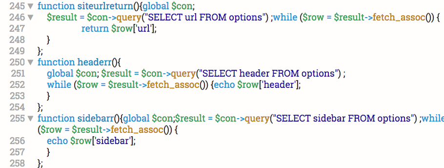

Neat Code is Key
If it is your first time coding, your files might look a little something like this:
For the experienced programmer, this is "unreadable" code. Obviously, this is an exaggeration. The code is able to be read and interpreted, but not without a significant amount of time and effort. It may not seem like the largest inconvenience if it takes a few seconds longer to go over the code right? Maybe, but imagine if an entire project is "unreadable." The seconds necessary to interpret over 500 lines would add up. The solution to this is simple, coding standards. Coding standards are a well defined practice that a group of programmers can use to make their code organized in a similar fashion. Why would you want to do that? Coding standards might be difficult to get used to, but once thee standard is implemented into your practices, standard-less code becomes "unreadable."
Organization
Every programmer will inevitably be required to work with others. Like handwriting, the natural practices of individuals are unique. The format and design of a program can vary widely from author to author. Although individuation is generally a good thing, this is not the case for programming. By implementing a coding standard, multiple programmers can format their code in a common fashion. This common format is of great advantage when working on the same code or same projects. By utilizing a common format, the code becomes more simple. Take the scenario for example, you go to a party at a friends house. As everyone enters, they remove their shoes, this is common practice in Hawaii. The party comes to an end and everyone leaves. THe door slowly becomes swamped as each person who leaves are required to sort through the pile of shoes looking for theirs. It is a common joke in Hawaii that you go home with someone elses shoes by accident.
This is a silly example that does a good job to represent the problem that arises from a lack of formatting. If everyone had organized their shoes on a shoe rack before entering for example, they would have a much easier time finding their shoes as they exit. Just like coding standards, formatting in a common organized style would increase the speed and accuracy of users attempting to identify in this case their shoes.
Sustainability
The common organization outlined by coding standards do much more than increase readability. Throughout multiple projects, the use of a coding standard will improve the capabilities that code can be reused. The reuse of code saves hours and promotes consistency. By using the same code for scenarios that appear consistently, the necessity to recreate code and debug that code is greatly alleviated. So the next time someone needs to look at your code, impress them by implementing a neat coding standard. They will certainly appreciate the simplicity and clarity that you provide them with.